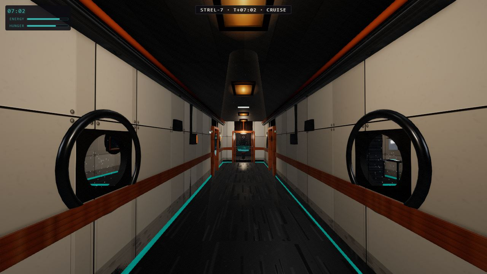

A first-person walkable starship, entirely procedural — no asset files, no engine but Three.js. Written end-to-end by an AI agent fleet under direction, one verified screenshot at a time.

Built by a fleet of Claude agents working in parallel — one room per agent, an orchestrator enforcing a 300-line file limit and a typed room contract, and a headless Playwright verify pass screenshotting every named camera before any phase could merge. Ten functional tests (doors, quests, portals, save/load) gate every release; the frame budget is measured on real hardware, not taken on faith.
There are zero asset files in the repo: every wall panel and floor streak is painted onto a CanvasTexture at runtime, every planet outside the windows is procedurally seeded. The constitution the agents worked under is public — read CLAUDE.md and KICKOFF.md in the repo.